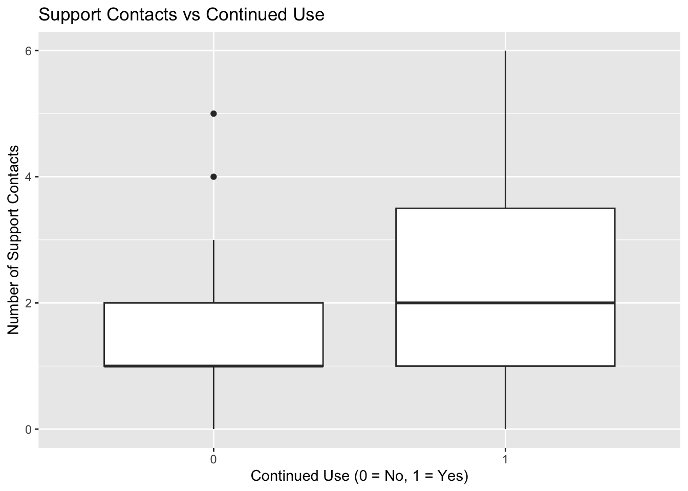
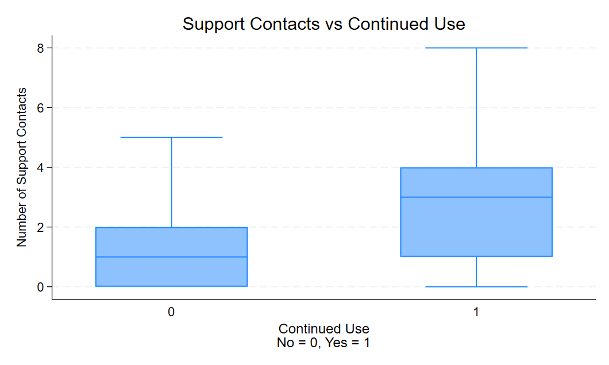
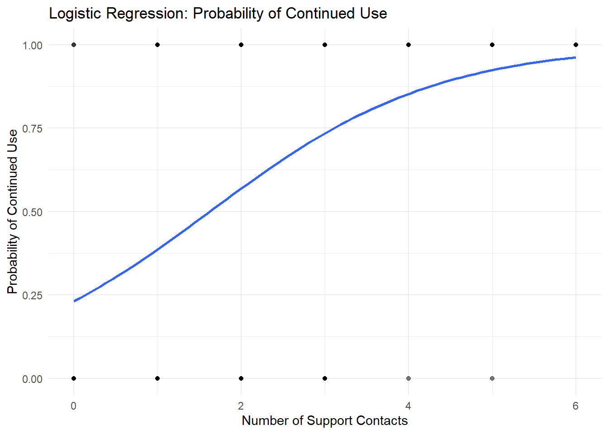
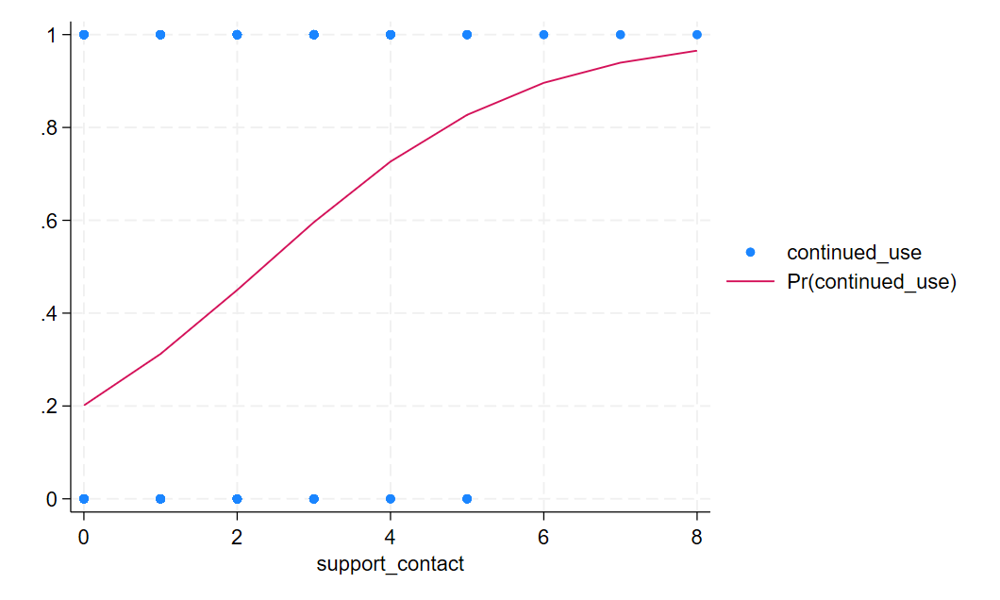
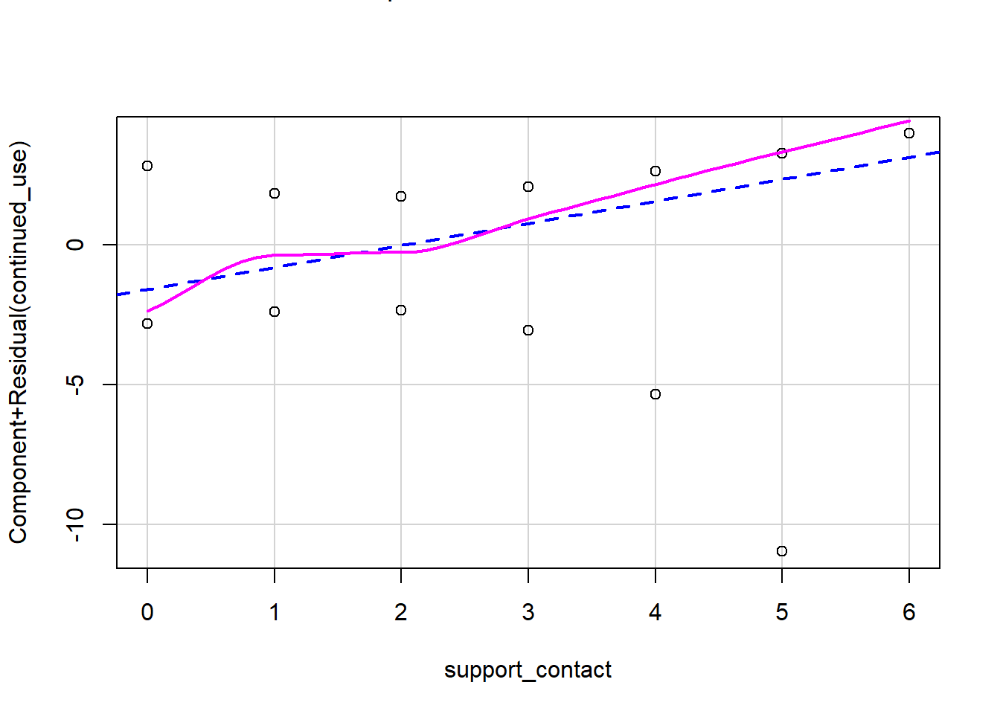

This chapter covers logistic regression, which is used when the outcome variable is binary. We will use an example dataset to investigate whether the frequency of technical support contact predicts whether a user continues to use a software product.
7.2 Example Question
Does the frequency of contacting technical support predict whether a user will continue using a software product?
7.3 Required Packages (R)
# Load the necessary packages library(tidyverse) # used for data manipulation and visualization
── Attaching core tidyverse packages ──────────────────────── tidyverse 2.0.0 ──
✔ dplyr 1.1.4 ✔ readr 2.1.5
✔ forcats 1.0.0 ✔ stringr 1.5.1
✔ ggplot2 3.5.0 ✔ tibble 3.2.1
✔ lubridate 1.9.3 ✔ tidyr 1.3.1
✔ purrr 1.0.2
── Conflicts ────────────────────────────────────────── tidyverse_conflicts() ──
✖ dplyr::filter() masks stats::filter()
✖ dplyr::lag() masks stats::lag()
ℹ Use the conflicted package (<http://conflicted.r-lib.org/>) to force all conflicts to become errors
library(broom) # for tidying the model output, making it easier to work withlibrary(Statamarkdown) # to run Stata commands in an R environment
Stata found at C:/Program Files/Stata18/StataBE-64.exe
The 'stata' engine is ready to use.
# Statamarkdown configurationstataexe <-"C:/Program Files/Stata18/StataBE-64.exe"# Add your own path to the Stata executable here if you want to try this outknitr::opts_chunk$set(engine.path=list(stata=stataexe))# to install any missing packages go to the Terminal and run the command: install.packages("PACKAGE_NAME")
7.4 Simulating the Dataset in R
# Setting a seed for reproducibilityset.seed(123)# Simulating datan <-200support_contact <-rpois(n, lambda =2) # Number of contacts with supportcontinued_use <-rbinom(n, size =1, prob =1/ (1+exp(-(-1+0.5* support_contact))))# Creating a data framedata <-data.frame(support_contact, continued_use)# Viewing the first few rows of the datasethead(data)
* Set seedfor reproducibilitysetseed 123* Simulate datasetobs 200gen support_contact = rpoisson(2)gen continued_use = rbinomial(1, 1 / (1 + exp(-(-1 + 0.5 * support_contact))))* Save to data filesave logreg_data.dta* View the first few rowslistin 1/10
Number of observations (_N) was 0, now 200.
file logreg_data.dta already exists
r(602);
r(602);
7.6 Visualizing the Descriptives in R
# Plotting the distribution of support contacts for users who continued vs those who didn'tggplot(data, aes(x =factor(continued_use), y = support_contact)) +geom_boxplot() +labs(title ="Support Contacts vs Continued Use",x ="Continued Use (0 = No, 1 = Yes)",y ="Number of Support Contacts")

7.7 Visualizing the Descriptives in Stata
* NO NEED TO LOAD DATA AGAIN If USING STATAuse logreg_data.dta* Data summarysummarize
Variable | Obs Mean Std. dev. Min Max
-------------+---------------------------------------------------------
support_co~t | 200 1.875 1.523476 0 8
continued_~e | 200 .435 .4970011 0 1
* Box plot of support contacts by continued usegraph box support_contact, over(continued_use) title("Support Contacts vs Continued Use") b1title("Continued Use""No = 0, Yes = 1") ytitle("Number of Support Contacts")

7.8 Running the Logistic Regression in R
# Fitting the logistic regression modellogistic_model <-glm(continued_use ~ support_contact, data = data, family ="binomial")# Viewing the summary of the logistic regression modelsummary(logistic_model)
Call:
glm(formula = continued_use ~ support_contact, family = "binomial",
data = data)
Coefficients:
Estimate Std. Error z value Pr(>|z|)
(Intercept) -1.2023 0.3046 -3.947 7.90e-05 ***
support_contact 0.7398 0.1453 5.092 3.54e-07 ***
---
Signif. codes: 0 '***' 0.001 '**' 0.01 '*' 0.05 '.' 0.1 ' ' 1
(Dispersion parameter for binomial family taken to be 1)
Null deviance: 274.83 on 199 degrees of freedom
Residual deviance: 240.15 on 198 degrees of freedom
AIC: 244.15
Number of Fisher Scoring iterations: 4
7.8.1 Output interpretation
Term
Description
Coefficients
Estimates of the regression coefficients.
Std. Error
Standard errors of the coefficients.
z value
The test statistic for each coefficient.
Pr(>|z|)
The p-value associated with each coefficient, indicating whether it is statistically significant. If the p-value is less than the significance level (typically 0.05), we reject the null hypothesis that the coefficient is equal to zero.
7.9 Running the Logistic Regression in Stata
* Loading data to make it work in R environment, YOU DO NOT NEED TO LOEAD THE DATA AGAIN IN STATA IF YOU ALREADY LOADED IT BEFORE!use logreg_data.dta* Fit the logistic regression modellogit continued_use support_contact
> DATA AGAIN IN STATA IF YOU ALREADY LOADED IT BEFORE!
Iteration 0: Log likelihood = -136.93464
Iteration 1: Log likelihood = -121.18683
Iteration 2: Log likelihood = -121.17434
Iteration 3: Log likelihood = -121.17434
Logistic regression Number of obs = 200
LR chi2(1) = 31.52
Prob > chi2 = 0.0000
Log likelihood = -121.17434 Pseudo R2 = 0.1151
------------------------------------------------------------------------------
continued_~e | Coefficient Std. err. z P>|z| [95% conf. interval]
-------------+----------------------------------------------------------------
support_co~t | .589038 .1166492 5.05 0.000 .3604098 .8176661
_cons | -1.379241 .2688518 -5.13 0.000 -1.906181 -.8523008
------------------------------------------------------------------------------
7.9.1 Output description
Term
Description
Coef.
Estimates of the regression coefficients.
Std. Err.
Standard errors of the coefficients.
z
The test statistic for each coefficient.
P>|z|
The p-value associated with each coefficient, indicating whether it is statistically significant. If the p-value is less than the significance level (typically 0.05), we reject the null hypothesis that the coefficient is equal to zero.
7.10 Plotting the Results in R
# Plotting the logistic regression curveggplot(data, aes(x = support_contact, y = continued_use)) +geom_point(alpha =0.5) +geom_smooth(method ="glm", method.args =list(family ="binomial"), se =FALSE) +labs(title ="Logistic Regression: Probability of Continued Use",x ="Number of Support Contacts",y ="Probability of Continued Use") +theme_minimal()
`geom_smooth()` using formula = 'y ~ x'

7.11 Plotting the Results in Stata
* Create logistic regression plot /* Generate the predicted probabilitiesThis command generates the predicted probabilities from the logistic regression model and stores them in a new variable called 'prob'.*/predictprob, pr/* Sort the data by the predictor variable. Sorting the data by 'support_contact' ensures that the line plot of predicted probabilities will be smooth and correctly ordered.*/sort support_contact/* Plot the scatter plot with the logistic regression line This command creates a scatter plot of 'continued_use' against 'support_contact' and overlays it with a line plot of the predicted probabilities, which should form a sigmoidal curve.*/twoway (scatter continued_use support_contact) (lineprob support_contact)

7.12 Assumptions
Assumption
Description
Binary Outcome
The dependent variable should be binary.
Independence
Observations should be independent of each other.
Linearity of logit
The logit (log-odds) of the outcome should be linearly related to the predictors.
No multicollinearity
The predictors should not be highly correlated with each other.
Large sample size
Logistic regression typically requires a large sample size to provide reliable estimates.
7.13 R
7.13.1 Binary oucome
table(data$continued_use)
0 1
89 111
7.13.2 Independence
Verify that observations are independent. This is usually ensured by the study design.
7.13.2.1 Linearity of logit
library(car)
Loading required package: carData
Attaching package: 'car'
The following object is masked from 'package:dplyr':
recode
The following object is masked from 'package:purrr':
some
logit_model <-glm(continued_use ~ support_contact, data = data, family = binomial)crPlots(logit_model)

7.13.3 No Multicollinearity
Note: The assumption of no multicollinearity is relevant only when you have at least two predictors in your model. Multicollinearity occurs when two or more predictors are highly correlated with each other, which can make it difficult to determine the individual effect of each predictor on the dependent variable.
Check for multicollinearity among predictors.
vif(YOUR_MODEL_HER)
Error in eval(expr, envir, enclos): object 'YOUR_MODEL_HER' not found
7.13.4 Large sample size
Ensure you have a sufficiently large sample size. A rule of thumb is at least 10 events per predictor variable.
7.14 Stata
7.14.1 Binary oucome
tabulate continued_use
no variables defined
r(111);
r(111);
7.14.2 Independence
Verify that observations are independent. This is usually ensured by the study design.
7.14.3 Linearity of logit
gen logit_support_contact = log(support_contact / (1 - support_contact))scatter logit_support_contact support_contact
support_contact not found
r(111);
r(111);
7.14.4 No Multicollinearity
estatvif
last estimates not found
r(301);
r(301);
7.14.5 Large sample size
Ensure you have a sufficiently large sample size. A rule of thumb is at least 10 events per predictor variable.
7.15 Syntax Comparison: R vs Stata
This table summarizes the main differences between R and Stata in terms of syntax for performing Logistic Regression analysis.